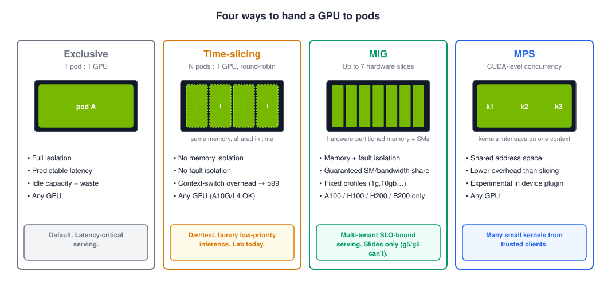

Module 3 · GPU scheduling & sharing¶
Goal: you can choose between exclusive GPUs, time-slicing, MIG and MPS — and defend the choice.
Do this first (30 seconds)¶
Before the talk starts, kick off 3.1 Warm the image cache. It pre-pulls the 9 GB vLLM image onto your GPU node while we talk, so Lab 2 doesn't start with a five-minute download. Go do it now; come back.
Scheduling mechanics, in five lines¶
nvidia.com/gpuis an extended resource: integer, requests == limits, never overcommitted.- The scheduler sees only the integer. To pick a GPU model you use GFD labels:
nodeSelector: {nvidia.com/gpu.product: NVIDIA-A10G}or an affinity onnvidia.com/gpu.memory. - GPU nodes are tainted; GPU pods tolerate. Everything else stays off.
- Karpenter watches for Pending pods it could satisfy, launches the cheapest node that fits, and waits for
nvidia.com/gputo register before it counts the node as initialised. - Scale-down is a policy decision, not a default:
WhenEmptyfor inference fleets, with aconsolidateAfteryou chose on purpose.
The utilisation problem¶
Most inference workloads don't saturate a GPU. A 1.5B-parameter model serving a handful of concurrent users uses a slice of an A10G's compute and a fraction of its 24 GB. Meanwhile the scheduler hands out GPUs as whole units, so the other 70% of that card is idle — and idle GPU is the single largest line item in most AI platform bills. Every sharing technique exists to close that gap, and each one gives something up for it.

Exclusive (the default)¶
One pod, one GPU, full isolation, predictable latency. The right answer for latency-critical serving and for anything with a strict SLO. The wrong answer for dev environments, notebooks, batch scoring and small models — which is most of the fleet.
Time-slicing¶
The device plugin advertises N replicas of each GPU (nvidia.com/gpu: 4 on a node with one card), and the GPU's own scheduler round-robins between the processes. Configured in a ConfigMap; opt nodes in with a label. Works on every GPU including A10G and L4.
What you give up: no memory isolation (one pod can OOM another), no fault isolation (one pod's Xid error can take down the others), and context-switch overhead that shows up as p99 latency. Also: DCGM can no longer attribute utilisation to individual containers on a sliced node — you lose per-pod GPU metrics.
Use it for dev/test, notebooks, bursty low-priority inference. Don't use it for anything with a latency SLO. This is what the mini-lab does.
MIG — Multi-Instance GPU¶
Hardware partitioning. An A100 or H100 is carved into up to seven slices, each with its own memory, SMs and cache — real isolation, guaranteed bandwidth, predictable latency. Profiles are fixed (1g.10gb, 2g.20gb, 3g.40gb…), configured per node via the MIG manager and a nvidia.com/mig.config label, and exposed as nvidia.com/mig-1g.10gb resources.
What you give up: flexibility (fixed profiles), and hardware choice: MIG exists on A100, A30, H100, H200, B200 and newer. Not on A10G (g5), L4 (g6) or L40S (g6e) — which is exactly why today's lab uses time-slicing and MIG is slides only. On EKS, MIG is the right tool for multi-tenant SLO-bound serving on p4/p5-class nodes.
MPS — Multi-Process Service¶
CUDA-level concurrency: multiple processes share one GPU context, so kernels from different clients can run concurrently instead of time-sliced. Lower overhead than slicing, memory limits per client, but a shared address space (trust your tenants) and, in the Kubernetes device plugin, still labelled experimental. Mention-level today.
Choosing¶
| You need… | Use |
|---|---|
| Strict latency SLO, production serving | Exclusive (or MIG on A100/H100) |
| Isolation between tenants on big GPUs | MIG |
| Higher utilisation for dev/test/notebooks/bursty jobs on any GPU | Time-slicing |
| Many small kernels from one trusted team, lowest overhead | MPS |
| Fractional GPUs as a first-class scheduler concept | DRA (Kubernetes 1.34+), not today |
Karpenter and GPU fleets¶
Scale-up is the easy part: Pending pod → node in ~3 minutes, as you saw. The things that go wrong are on the other side:
- Consolidation —
WhenEmptyOrUnderutilizedwill replace a running inference node with a cheaper one. You wantWhenEmptyplus an intentionalconsolidateAfter. - Spot interruptions — EC2 gives two minutes' warning. Karpenter (via the interruption queue from the base stack) cordons and drains the node. Your model server needs a
terminationGracePeriodSecondslong enough to finish in-flight requests, a PodDisruptionBudget, and at least two replicas if the SLO matters. A single Spot replica of anything user-facing is a choice you're making, not an accident. - Limits —
limits.nvidia.com/gpuon the NodePool. Always. - Expiry —
expireAfter(default 30 days) rolls nodes for driver/AMI hygiene. Make sure your workloads can survive it before it surprises you at 3 a.m.
Mini-lab¶
| Step | What happens |
|---|---|
| 3.1 Warm the image cache | (already done) a DaemonSet pre-pulls vLLM onto every GPU node |
| 3.2 Time-slice a node | ConfigMap + node label → your Lab 1 node advertises nvidia.com/gpu: 4 |
| 3.3 Four pods, one GPU | Four GPU pods land on one card; nvidia-smi shows four processes |
| 3.4 The fifth pod | A fifth pod can't fit → Karpenter launches a second, unsliced node |
| 3.5 Reset for Lab 2 | Un-slice the node; leave the fifth pod running (you'll meet it again) |